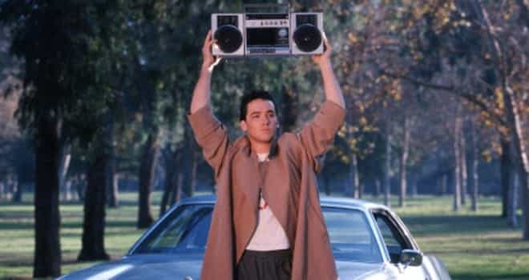

Jared is a middle-aged guy full of old-man wisdom. He's best described as a gentlemen scholar and a man among men. You can read his writing at his site: Legends of Men


Not long ago I remember seeing a report that millennials are having less sex than previous generations at the same age. According to the current generational timeline, I fall in with those neutered millennials even though I am middle-aged now. Not only that but my sex-drive is through the roof, as it has been since I was fourteen.
There are a lot of characteristics about millennials you’ll see in reports that don’t apply to early millennials. Another one is that millennials are far more likely to go to college than previous generations. And yet, of nearly everyone I know around my age I’m the only one to have graduated college.
Something is wrong with the current way we think of millenials and other generations. With that in mind here is a new, improved generational timeline.
Unchanged
Unchanged

Baby boomers have gotten a bad rap lately. There are plenty of good reasons for that. The most important reasons being that they benefited from a booming economy in which isolationist America had no international competitors because they were demolished during WWII. And yet they ensured that future generations could not enjoy those same benefits.
Baby boomers suffer from a post-industrial mindset in which resources are seemingly unlimited. Because they are unlimited there are plenty to go around. That’s why America has had something like an open border for the last 30 years.
It’s also why in times of economic downturns baby boomers tell younger generations to flip burgers, as if there is always a job to be had. In the 60’s and 70’s boomers could get well-paying entry level jobs but they don’t seem to understand that subsequent generations don’t always have that luxury.
There are plenty of other reasons to bash boomers. The hippie free-love movement was a way of saying there’s plenty of unattached sex for everyone. Come get it in. The debauchery of the 70’s was the same way. Children grew up with this stuff. They watched their parents or older siblings participate in this debauchery.
I won’t even get in to no-fault divorce because it’s too big a topic. The bottom line is that if you had any formative years in the 60’s or 70’s you had enough shared experiences and influence to be one generation unique from the rest.
Baby Boomers didn’t pass make those laws that damaged America so much. But they did benefit from a post WWII economy while being raised in a time when America’s downfall was in it’s infancy. Now that they are the lawmakers and the business owners their views take America steeper down the decline.

The current generation timeline has millennials starting in 1980. But people born in 1985 have far more in common with people born in 1975 than they do with people born in 1995.
One of the big factors here is the amount of children raised in broken homes thanks to no-fault divorce. Baby boomer parents damaged their children when they divorced. Those children growing up in broken homes in the 80’s have substantial shared experiences from that.
Pop culture plays an important role starting here as well. In the 80’s and early 90’s the stuff that was cool represented America better demographically. Ethnically, it was majority white, minority black, and very few from other ethnicities. Pop culture reflected that. The talent of black performers like Michael Jackson and Whitney Houston was undeniable, but for the most part, 8 out of 10 cool things came from some part of white culture.
In the early 90s pop culture started skewing towards black culture. Gangsta rap was taking off. R&B groups like TLC were huge. The fresh prince of Bel-Air was popular. But they were only a portion, a more representative portion, of what was cool in America. That would change in subsequent generations.
The nuclear family was fading for Gen-X but it wasn’t so close to gone like it would be for the next generation. Gender roles were also relatively traditional. If you were born before 1990 in America there is a very high chance you expect men to be masculine and women to be feminine, or at least prefer it. That started to change for people born after 1989.
Millennials are defined by several important traits. They grew up in the 90’s or just beyond, a relatively good time economically (though with many looming economic disasters building). This combined with a continuation of the ill-effects of rising divorce rates gives millennials a very skewed view of dating.
This is essentially why we have hook-up culture and need game. Millennial adults have the post-industrial mindset (there’s plenty of anything, include sex and welfare programs, to go around so give it away freely) as well as a lack of strong parental figures in the home. For numerous reasons millenials have little to no respect for the nuclear family. They value a life of endless quick pleasures over fulfillment. That’s because they’ve never had to do without quick, meaningless pleasures.
It was during the Bush’s first term that household income went up but average pay went down. That’s because more women joined the workforce. The absence of parents, especially mothers, in the home surely left a developmental mark on millennials.
Starting after the boy-band craze of the late 90’s black culture became the culture of cool. Rap was popular. Pop and rock music included rappers. Eminem gave white kids a way to like rap because he bridged the angry-white guy rock of 1998 with Dr. Dre. After 2003 just about everything “cool” came from black culture.
And perhaps most importantly, millennials never had an adult life without cell phones or the internet. The first millennials had to wait a few years to get internet on their cell phone but they still had both.
I remember when it was big news that more people used the internet for social media than for porn. Gen X used it for porn. Millennials to post pics of their lunch on facebook.
As children they grow up with tablets, memes, and YouTube. They’ll likely grow up thinking that everything is a political argument. Intimacy issues? Check. Socially awkward? Highly likely. A sense of national identity? Get real. May God have mercy on their souls.
This timeline better represents the commonalities between generations. With any luck, it will be recognized nationally.
Read More: An Ode To The Millennial Generation